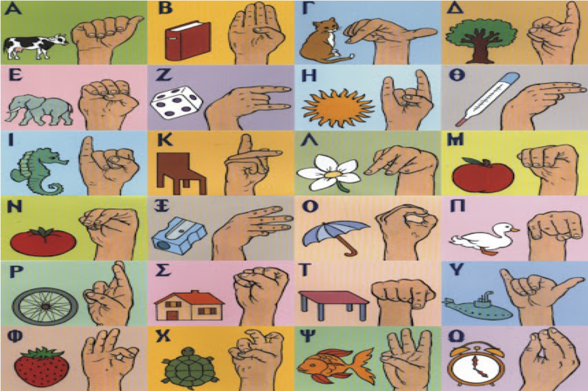

Απώλεια ακοής: η ελάττωση της ακουστικής ικανότητας που οδηγεί σε βλάβη τμημάτων του αυτιού.
Η απώλεια ακοής χωρίζεται σε:
| ΚΩΦΩΣΗ: ολική ή βαθιά απώλεια ακοής | Μονόπλευρη (στο ένα αυτί) | Προσωρινή |
| ΒΑΡΗΚΟΪΑ: μερική απώλεια ακοής | Αμφοτερόπλευρη (και στα δύο αυτιά) | Μόνιμη |
| Αιτίες | Λύσεις |
|---|---|
| Γενετικές (οφείλεται στο χρωμόσωμα 21) | Χρήση ακουστικών βοηθημάτων |
| Περιβαλλοντικές | Μέσω κοχλιακού εμφυτεύματος (μία ηλεκτρονική συσκευή) |
| Λόγω γύρανσης |